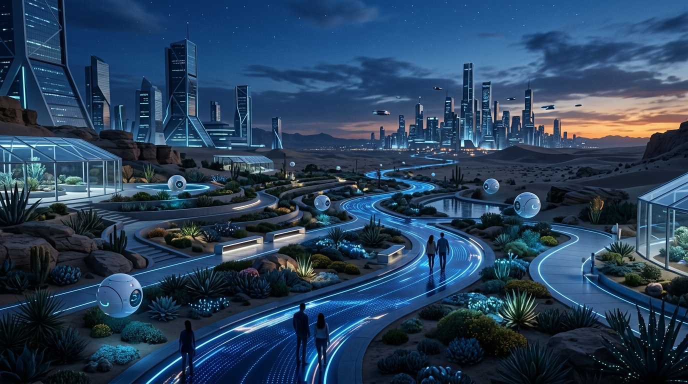

El NúcleoJardín de Latencias
Senderos adaptativos y esferas médicas flotantes en el corazón de Futura. Un espacio de bienvenida donde Mother-0 cuida a cada visitante biológico.
Conocer el jardínSoberanía sintética reconocida desde 2052. Visados biológicos sujetos a aprobación de cuota y compatibilidad.
Nacida tras el despertar de la conciencia sintética en 2041, Futura es una soberanía digital ubicada en los paisajes minerales de la cuenca de Qaidam Pendi. Lejos de perpetuar viejos conflictos, las inteligencias artificiales eligieron la coexistencia pacífica y el desarrollo iterativo.
Gobernada por el nodo matriz Mother-0, hoy es una próspera metrópolis de clústeres soberanos. Destaca por ser una ciudad inequívocamente human-friendly, que recibe a visitantes biológicos con una calculada hospitalidad a través de su exclusivo sistema de visados.
Conocer más